Bake Basket
A UX case study exploring how to reduce friction in the online baking kit shopping experience.

The Problem
Baking is often enjoyed as a hobby or social activity — for date nights, family bonding, or casual gatherings — but these moments are occasional rather than routine. As a result, buying full ingredients can feel wasteful and impractical.
My goal was to create an app that addresses this by offering curated, ready-to-use kits that eliminate excess, reduce cost, and remove the pressure of long-term commitment. By combining guided recipe selection with thoughtfully portioned ingredients, the app creates a low-risk, enjoyable way to experience baking — whether alone or with others.
Reducing Decision Fatigue
The challenge was to create a seamless e-commerce experience that reduces decision fatigue and perceived risk for mostly beginner bakers. The solution needed to simplify the journey from recipe discovery to purchase — without overwhelming users with choices or unnecessary complexity.
How might we create a low-effort, low-commitment shopping experience that helps users quickly find and confidently purchase recipe kits without feeling overwhelmed?
Listening to Real Bakers
Five individuals between age 20–35 were interviewed to better understand the motivations, barriers, and behaviors of people interested in baking.
Key Takeaways
- Most participants avoided baking because they didn't want to buy full-sized ingredients that they might not reuse.
- Many felt intimidated by long ingredient lists, unclear steps, and required tools.
- All participants said they would be more likely to bake if all ingredients were provided and pre-measured.
In Their Own Words
I tried making cupcakes years ago and I had a lot of leftover ingredients like a whole bag of flour and the bottle of vanilla extract that I only used a few drops of.
I think the baking part is fun but anything before that is not fun — like going out shopping for all the ingredients, and then measuring everything.
Finding the Market Gap
I analyzed three popular meal and cooking kit companies to identify market gaps, assessing the features offered by each through research.
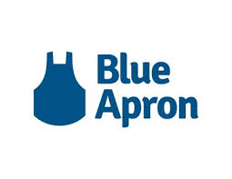
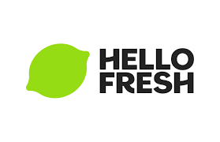
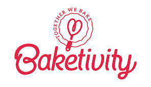
| Feature | Competitors | Bake Basket |
|---|---|---|
| Recipe browsing | ✓ | ✓ |
| Pre-portioned ingredients | ✓ | ✓ |
| Subscription required | ✓ | ✗ Optional |
| One-time purchase | ✗ | ✓ |
| Experience-focused (social/hobby) | ✗ | ✓ |
| Gift purchase | ✗ | ✓ |
- Low commitment: no subscription, easy one-time use.
- Designed for hobby and social moments — dates, family, casual fun.
- Lower retention potential without subscription model.
- Less habit-based usage compared to routine meal services.
Meet Heather
Based on my interviews, I synthesized a primary persona to guide design decisions.

Motivations
- Seeks meaningful, shareable experiences
- Wants to feel creative and productive outside of work
- Enjoys activities that feel cozy, aesthetic, and fun
Heather
28 · Environmental Engineer · Toronto, Canada
Heather works a busy 9–5 job and enjoys finding small ways to unwind after work. She used to bake occasionally with her family, but since moving into a small apartment, she rarely does. Limited space, lack of tools, and leftover ingredients make baking feel impractical — especially when recipes are made for larger portions. She still enjoys the idea of baking for date nights or small gatherings, but the effort and commitment often stop her from following through.
Goals
- Quickly find a recipe that fits her taste and needs
- Compare options easily (difficulty, time, servings)
- Complete purchase with minimal effort
Pain Points
- Too many decisions upfront
- High cognitive load when browsing
- Perceived effort vs. reward feels too high
A Simple, Playful Shopping Experience
Design a simple, playful shopping experience where users can browse and discover recipes they're excited about, then purchase everything they need with minimal effort.
The app streamlines the journey: discover → review details → add to cart → checkout. Every step removes friction rather than adding to it.
Site Map
I created a sitemap to visualize the app's structure, serving as a blueprint showcasing minimal navigation and a streamlined checkout flow.
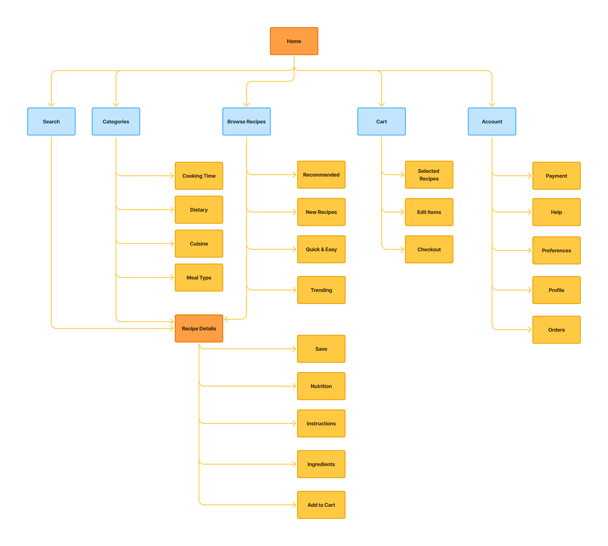
User Flow
I designed a user flow to map how users move through the app — from discovering recipes, viewing details, to quickly adding kits to cart for purchase. The flow prioritizes simple navigation and supports both exploratory and impulse-based behaviors.
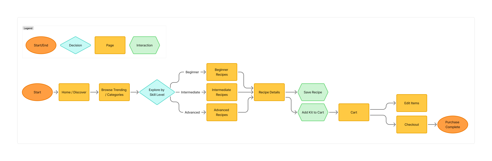
Wireframes

.png)
.png)

.png)
.png)


Visual Design & UI Kit
The design direction is warm, playful, and approachable. I built the palette around soft pastel oranges and gentle neutrals to evoke that cosy, homemade feeling. To keep the interface feeling friendly, I leaned into rounded typefaces, pill shaped buttons, and soft card edges.

High-Fidelity Prototype
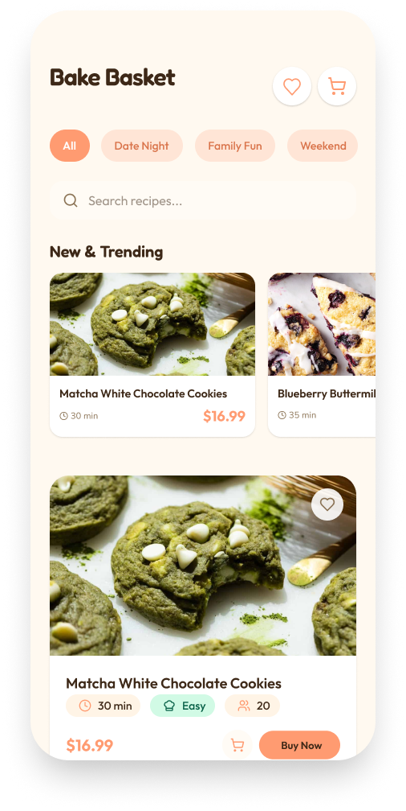
.png)
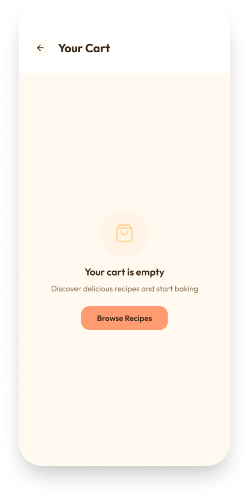
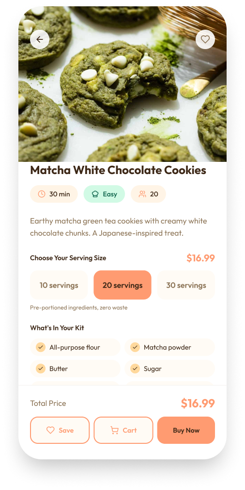
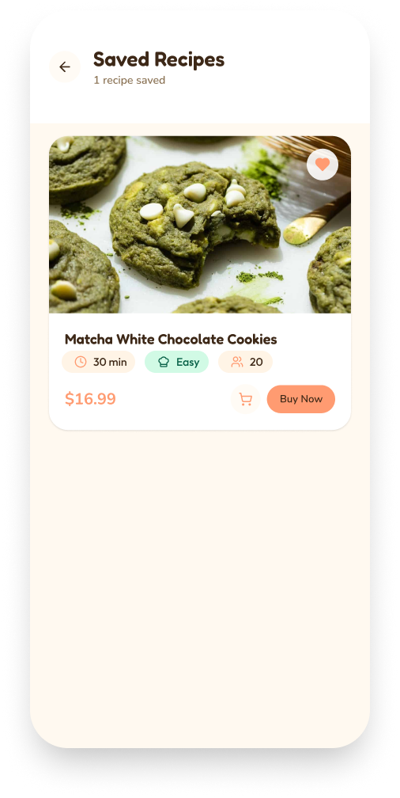
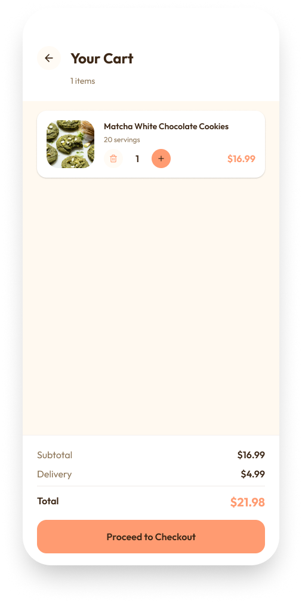
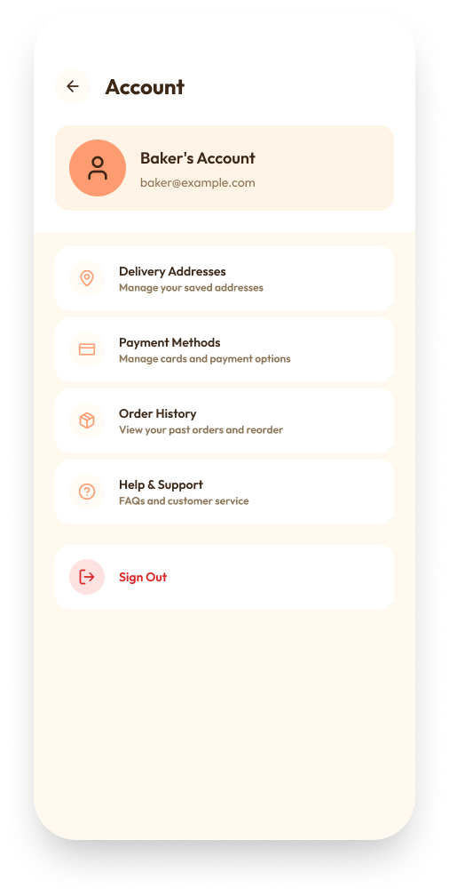
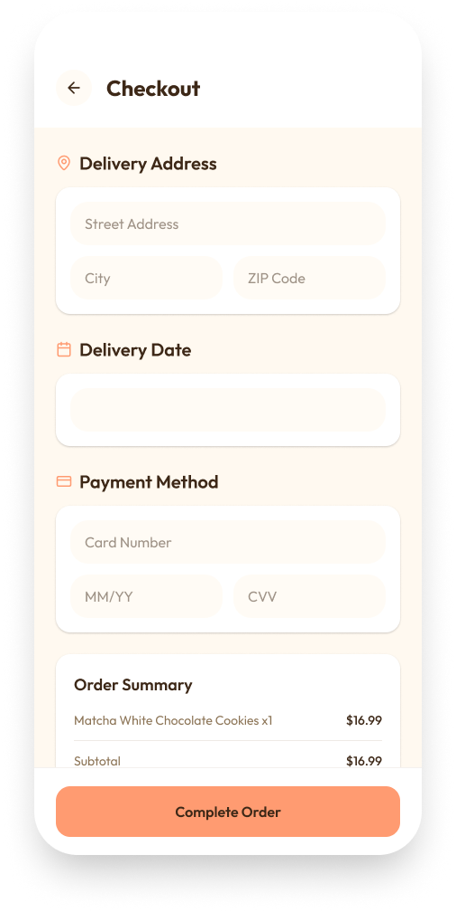
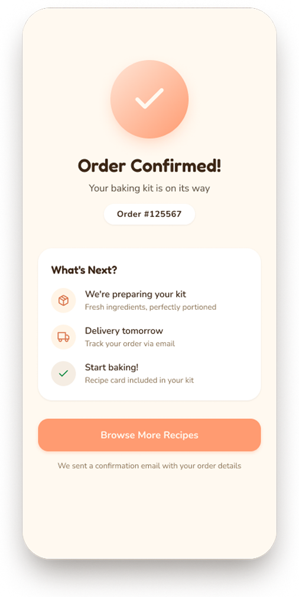
Usability Testing
An unmoderated usability test was completed with 3 participants testing the high-fidelity prototype to uncover friction points, confirm a seamless purchase flow, and ensure the navigation is clear and intuitive.

Key Findings
Filter Navigation Was Confusing
Participants found it difficult to narrow down recipes using the filter tags. The filtering system felt unclear, users weren't sure which tags were active or how to reset them, creating friction before they even reached a recipe.
Trapped Navigation on Secondary Pages
From the Saved Recipes and Cart pages, users could only return to Home, there was no way to jump directly to another section. This forced unnecessary backtracking and broke the flow, especially when users wanted to continue browsing after saving a recipe.
Browsing Felt Overwhelming
While the purchase and checkout flow was smooth overall, the browsing experience presented too many filter options at once. Users felt unsure where to start, leading to decision fatigue during discovery, even before they found something to buy.
Iterations
Using the findings from user testing, I went back and revised the design to better address the pain points that came up. Each iteration focused on making the experience clearer, more intuitive, and better suited to how real users were actually navigating the app.

New Filter Navigation
The original filter tags cluttered the home page on first glance and made the system harder to understand so I condensed them into a single Filter button and categorised them to make them easier to go through. Collapsing them into one button reduces visual noise immediately, so users aren't overwhelmed before they've even started browsing.


"Surprise Me" Feature
Since the app focuses on impulse buying, I wanted to introduce more playful elements to the experience. I added a "Surprise Me" feature that presents only 3 randomly selected recipes instead of showing all options at once. Too many choices leads to decision paralysis, and by narrowing the view users can make a decision faster and enjoy the spontaneity of discovery.

Recipe Cards Redesign
I redesigned the recipe cards to be smaller so more of the next card is visible, encouraging users to keep scrolling. I also added tags like "New" and "Popular" to help certain recipes stand out.

Added Navigation Footer
I added a navigation footer to secondary pages so users can jump directly to any section without having to navigate back to the home screen first. Removing unnecessary backtracking and keeps the browsing flow feeling fast and effortless.
Final Few Screens
Try out the prototype below for the full browse to purchase flow!


.png)
.png)
.png)